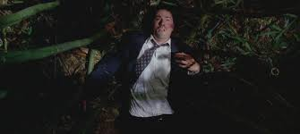

Primeiro Post no Blog
Publicado em 24 de setembro de 2024
Acordei de repente no meio de uma confusão. Tudo ao meu redor estava destruído, pedaços de avião espalhados pela areia, gritos e o som do oceano batendo forte. Eu estava no meio de uma praia, sem saber exatamente como cheguei ali, e meus sentidos estavam a mil. Quando me levantei, percebi que tinha acabado de sobreviver a um acidente de avião. O pânico tomou conta de mim enquanto olhava ao redor. Havia pessoas feridas, algumas tentando ajudar outras, enquanto alguns ainda estavam em choque, completamente desorientados. Eu não podia parar, havia muita coisa acontecendo. Comecei a ajudar como pude. Eu vi um homem sendo esmagado pelos destroços e consegui tirá-lo dali. Vi também uma mulher grávida, Claire, que estava prestes a dar à luz, e um cachorro vagando pela praia. Foi nesse momento que me dei conta de que éramos sobreviventes, mas estávamos presos em uma ilha. Logo me juntei a outros para tentar entender o que fazer. No meio dessa loucura, conheci algumas das pessoas que estavam no voo. Sayid, um ex-militar que parecia ter uma ideia de como manter a calma; Sawyer, um homem durão com um jeito grosseiro; Kate, que se mostrou uma peça importante para manter as coisas funcionando. Também havia um médico, Jack, que liderava as tentativas de resgate e primeiros socorros. No meio do caos, Jack, Kate e Charlie decidiram tentar encontrar a cabine do avião na selva, na esperança de localizar o transmissor. Durante essa caminhada, algo estranho aconteceu: um barulho ensurdecedor e assustador começou a ecoar pela floresta, como se algo enorme estivesse se movendo por lá, quebrando árvores. Não vimos o que era, mas sabíamos que havia algo muito perigoso escondido na ilha. A sensação era de que, além de estarmos isolados em um lugar desconhecido, havia algo mais, algo que não podíamos entender, e nossa luta por sobrevivência estava apenas começando.
